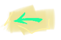
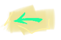

Дендропарк
Первый дендропарк на улице Первомайской был создан в 1932 году, когда здесь была основана научно-исследовательская станция озеленения. На месте соснового леса осенью 1934 года под руководством С. Л. Стельмахович началась посадка различных растений, привезённых из других регионов. Основные посадки были проведены в 1935—1936 годах. В 1962 году парк был открыт для посещения. По легенде до открытия парка на его месте было болото, из которого текла речка Малаховка, ныне исчезнувшая.В парке есть два пруда, на которых водятся утки.
Дендропарк на улице 8 Марта был создан во второй половине 1948 года вместе с питомником площадью 1 га. С 1949 года в парке начали проводиться выставки цветов и клумб. В 1952 году парк обогатился коллекцией цитрусовых, привезённых из Сочи. К 1955 году питомник обладал 80 видами сеянцев деревьев и кустарников.
В конце 1990-х годов парк занимал площадь 7,5 га, причём 300 м² занимает зимний сад. Парк разбит на несколько участков:
-участок декоративных цветов
-участок декоративных деревьев и кустарников для озеленения
-географический участок
-участок происхождения и эволюции растений
-плодово-ягодный участок
-питомники древесно-кустарниковых растений
-теплицы и оранжереи